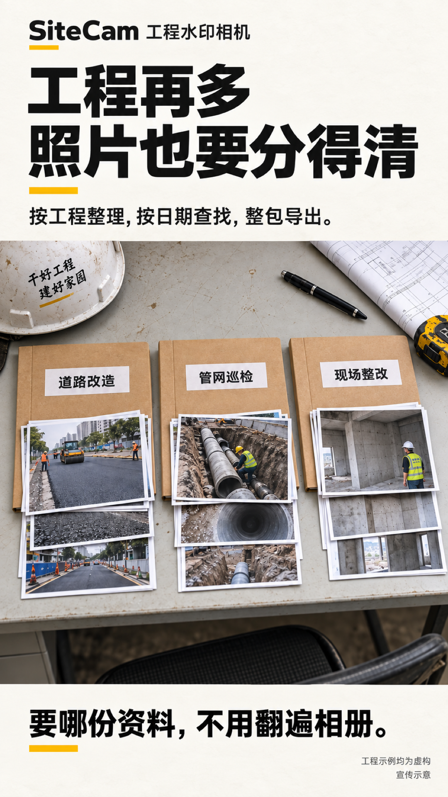
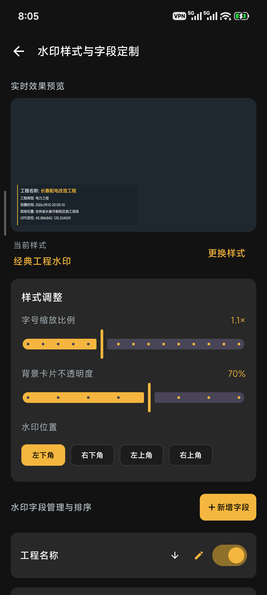

现场记录 · 工程整理 · v0.3.5
SiteCam工程水印相机
拍好现场照片，
整理好每个工程。
📷 拍摄加水印 · 🗂️ 按工程整理 · ✏️ 标记问题 · 📦 一键导出
📱 折叠屏、阔直屏和平板适配 · 🌸 鸿蒙版支持地址与坐标记录
✓ 免费✓ 开源✓ 无广告✓ Android + HarmonyOS

安卓真机截图 · 内置示例数据v0.3.5 · 版本说明
地址与坐标，现场信息一起记录。
鸿蒙版统一支持自动地址、经纬度及可用海拔记录；地址不可用时可手动填写，并继续拍摄、整理和导出。
功能介绍
拍摄、整理与导出。
功能宣传示意，点击查看大图。
从拍摄到交付
三个步骤，把现场资料理清楚。
🗂️ 建一个工程
填好工程名称，需要时加上线路、地点。不同项目分开整理。
📷 拍照，记下问题
选好水印，拍下现场。发现问题就标记，后续跟进处理。
📦 导出，交给同事
按日期查找资料，照片可以裁剪、画箭头、写文字。整理好后导出压缩包或文件夹。
选择你的设备与版本
下载与使用
🤖 安卓版 0.3.5
支持 Android 8.0 及以上。断网时仍可拍照、记录可用卫星坐标和高度，并使用工程中手填地点；资料也可照常导出。联网后可自动查询具体地址，查询失败不会影响拍摄和导出。手填地点优先显示，位置变化后不会继续把旧自动地址当作当前位置。定位结果受权限、系统位置服务和卫星信号影响；没有可用定位时仍可拍照并使用手填地点。
↓ 下载 Release（推荐自用）下载 Debug 调试版 · 与 Release 版数据独立
🌸 鸿蒙版 0.3.5
断网时仍可拍照和记录可用卫星坐标；没有可用定位时仍可拍照并使用工程中手填地点，资料也可照常导出。地址不可用时可手动填写。
鸿蒙版不申请应用联网权限；具体地址由系统服务提供，系统服务可能使用网络。完全断网时可能无法自动获取具体地址，可手动填写。
定位结果受系统位置服务、权限和卫星信号影响。成功获取时显示可用高度；未获取到高度时不显示为 0 米。高度供现场记录参考，不作为测绘数据或海平面高程数据。
Release HAP 未签名，需自行签名后安装。
↓ 下载 Release（未签名，需自行签名）🍎 iPhone / iPad 版暂时没有安装包。
使用前的小提醒
照片在哪里？会不会误删？
照片保存在哪里？
默认保存在应用内。卸载或换机前，请先导出需要保留的资料。
系统相册和应用里的照片，会一起删除吗？
安卓版开启“同时在系统相册显示”后，两边共用同一份文件。系统相册删除后，应用会同步隐藏；从回收站恢复后会重新显示。鸿蒙版的“另存到系统相册”会多存一份，两份互不影响。
一定要注册账号、打开定位吗？
不需要注册账号。没有定位结果时仍可拍照；鸿蒙版支持地址与坐标记录，地址不可用时可手动填写。拒绝录音仍可录制无声视频。
遇到问题，去哪里反馈？
可以在 GitHub 提交问题。请说明手机型号、版本和操作步骤；发截图前记得遮住个人信息。
把时间留给现场。
工具的事，让 SiteCam 帮你。
选择下载版本 ↑